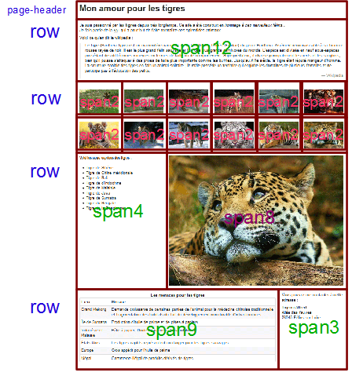
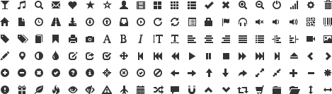
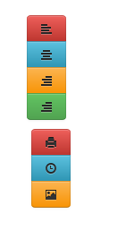
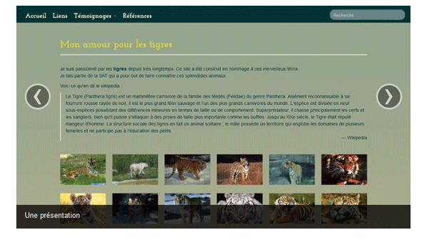
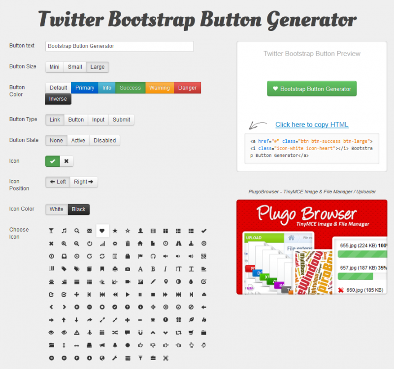

Vous créez des pages web et vous passez beaucoup de temps avec le CSS ?
Alors Bootstrap est fait pour vous et ce cours va vous guider dans la découverte de cette puissante boîte à outil. Bootstrap est un framework qui peut rendre votre vie de plus facile pour créer l'architecture d'une page web.
Mais Bootstrap va bien plus loin qu'offrir du code CSS déjà bien organisé et structuré. Il offre aussi des plugins jQuery de qualité pour enrichir vos pages.
Vous êtes prêt ? Bon on y va mais il serait bien pour profiter pleinement de ce cours de posséder quelques connaissances :
La base indispensable est de bonnes notions en HTML et CSS. Vous avez des lacunes ? Comblez-les avec le cours de Mateo
Pour comprendre la mise en œuvre des plugins jQuery vous aurez besoin des quelques bases dans ce domaine. Il vous en manque, alors vous pouvez réparer ça ici.
Si vous voulez modifier Bootstrap pour l'adapter à vos besoins il vous faudra connaître LESS. Là aussi vous avez besoin d'un coup de main ? C'est ici.
Pour utiliser efficacement Bootstrap vous devez déjà être convaincu de son utilité, vous devez aussi savoir l'installer. Ce chapitre est destiné à vous faire découvrir en quoi Bootstrap peut vous aider et comment vous devez le mettre en œuvre pour l'utiliser efficacement.
C'est un ensemble de composants structurés qui sert à créer les fondations et à organiser le code informatique pour faciliter le travail des programmeurs, que ce soit en terme de productivité ou de simplification de la maintenance. Il en existe beaucoup pour les applications web qui ciblent les langages Java, Python, Ruby, PHP...
Les frameworks CSS sont spécialisés, comme leur nom l'indique, dans les CSS ! C'est-à-dire qu'ils nous aident à mettre en forme des pages web : organisation, aspect, animation...
Ils semblent devenus à la mode et il en existe un certain nombre :
Les navigateurs sont pleins de fantaisies et ont des comportements très différents, surtout pour les anciennes versions. Les frameworks sont cross-browser et on a la garantie d'une présentation similaire quel que soit le navigateur utilisé et d'une parfaite compatibilité,
Les frameworks CSS font gagner du temps de développement parce qu'ils nous proposent les fondations de la présentation,
Les frameworks CSS normalisent la présentation en proposant un ensemble homogène de styles,
Les frameworks CSS offrent souvent des éléments complémentaires : boutons esthétiques, barres de navigation...
La grande diffusion de nouveaux moyens de visualisation du web (iPod, iPad...) impose désormais la prise en compte de tailles d'écran très variées, les frameworks CSS prennent généralement en compte cette contrainte.
Et les inconvénients ?
Pour utiliser efficacement un framework il faut bien le connaître, ce qui implique un temps d'apprentissage
La normalisation de la présentation peut devenir lassante en lissant les effets visuels
Par rapport aux deux inconvénients énoncés, Bootstrap est d'une prise en main rapide même pour un débutant (surtout avec un joli tuto comme celui-ci :p ) et est totalement configurable parce qu'il est construit avec LESS (que nous verrons un peu plus loin dans le cours).
Vous connaissez forcément Twitter, un des principaux réseaux sociaux qui inondent la planète de liens virtuels entre les humains devenus des noyaux cybernétiques. Le projet Bootstrap a été publié en août 2011 pour répondre à des besoins internes de développement de cette entreprise. Il a été mis à disposition du public sous licence Apache. La version 2.1 est sortie en août 2012.
Contenu du kit
Bootstrap propose :
une mise en page basée sur une grille de 12 colonnes. Vous avez donc une grille à disposition bien pratique. Bien sûr, si vous avez besoin de plus de 12 colonnes, ou de moins, il est toujours possible de modifier la configuration.
une bibliothèque totalement open source sous licence Apache
du code qui tient compte du format d'affichage des principaux outils de navigation (responsive design) : smartphones, tablettes...
des plugins jQuery de qualité
un résultat cross-browser, en prenant même en compte IE7, donc une garantie de compatibilité maximale
une bonne documentation sur le site de Twitter
la garantie d'une évolution permanente
une architecture basée sur LESS, un outil bien pratique qui étend les possibilités de CSS
Vous pouvez trouver toutes les informations sur Bootstrap directement sur le site dédié.
C'est quoi un reset CSS ?
Les navigateurs n'adoptent pas tous les mêmes valeurs par défaut pour les styles des éléments HTML. Cela peut générer quelques surprises au rendu des pages WEB selon le navigateur utilisé. Le reset consiste à mettre à zéro toutes les valeurs pour ainsi uniformiser le rendu. Le reset de Bootstrap est basé sur celui d'Eric Meyer, allégé et adapté.
L'installation de Bootstrap est simple : cliquez sur le bouton de téléchargement sur le site de Twitter.
Quand vous téléchargez la librairie vous obtenez un fichier zippé contenant un répertoire bootstrap avec 3 sous-répertoires contenant quelques fichiers :
Voyons un peu ces fichiers :
bootstrap.css comporte les classes de base de Bootstrap ;
bootstrap.min.css comporte les mêmes classes de base que bootstrap.css sans les commentaires ;
bootstrap-responsive.css comporte les classes de base pour le responsive design ;
bootstrap-responsive.min.css comporte les mêmes classes de base que bootstrap-responsive.css sans les commentaires ;
glyphicons-halflings.png comporte une collection d'icônes fournies par glyphicons ;
glyphicons-halflings-white.png comporte la même collection d'icônes mais blanche ;
bootstrap.js contient des fonctions JavaScript des composants de Bootstrap ;
bootstrap.min.js contient les mêmes fonctions JavaScript sans les commentaires. C'est le fichier à utiliser en production.
Les fichiers "min" (bootstrap.min.css et bootstrap-responsive.min.css) contiennent le même code que leurs équivalents (bootstrap.css et bootstrap-responsive.css) mais ont été épurés des commentaires et ainsi allégés pour accélérer leur chargement.
D'accord, mais que mettre sur un site pour que Bootstrap fonctionne ?
Il faut distinguer les deux situations :
Pendant la phase de développement, il est intéressant de pouvoir naviguer dans le code de Bootstrap, il faut donc mettre les fichiers CSS non compressés ;
Lorsque votre site est en ligne vous n'avez plus à vous inquiéter du code et seule compte la vitesse de chargement, il faut donc cette fois utiliser les versions compressées ("min").
Voilà les fichiers utiles pendant la phase de développement (le fichier bootstrap-responsive.css n'est à prévoir que si vous avez besoin du responsive design, le fichier bootstrap.js n'est à prévoir que si vous utilisez des plugins jQuery) :
Voilà les fichiers utiles lorsque le site est en ligne (le fichier bootstrap-responsive.min.css n'est à prévoir que si vous avez besoin du responsive design, le fichier bootstrap.min.js n'est à prévoir que si vous utilisez des plugins jQuery) :
Dans tous les exemples de ce tuto je pars du principe qu'un répertoire bootstrap a été créé à la racine du site avec les trois répertoires css, img et js comportant les fichiers cités ci-dessus.
Pour que bootstrap fonctionne il faut le déclarer dans les pages HTML qui doivent d'ailleurs être impérativement au format HTML 5, donc :
<!DOCTYPE html>
...
Il faut ensuite déclarer au minimum le fichier bootstrap.min.css (ou bootstrap.css) dans l'en-tête de la page web :
Si votre application est destinée à être utilisée sur des supports variés (tablettes, iPhones...) vous devez aussi déclarer le fichier bootstrap-responsive.min.css (ou bootstrap-responsive.css) dans l'en-tête de la page web :
A partir de là toutes les classes sont accessibles... Évidemment vous devez adapter le lien selon la localisation de vos fichiers, c'est le cas d'ailleurs sur mon site de démonstration où vous trouverez le lien ainsi libellé :
Vous trouvez aussi sur le site une page de démarrage comportant l'essentiel des éléments pour vous aider à initier un projet. Pour le moment vous n'allez pas encore comprendre l'utilité de tous ces éléments, mais vous y reviendrez par la suite lorsque vous aurez fait le tour de ce cours.
Vous y trouvez les appels aux fichiers CSS :
<!-- Le styles -->
<link href="../assets/css/bootstrap.css" rel="stylesheet">
<style>
body {
padding-top: 60px; /* 60px to make the container go all the way to the bottom of the topbar */
}
</style>
<link href="../assets/css/bootstrap-responsive.css" rel="stylesheet">
Il faut évidemment adapter les liens à votre situation. Nous verrons l'utilité du style ajouté lors de l’examen des barres de navigation.
Je rappelle que le fichier bootstrap-responsive.css est utile si votre application doit s'adapter à une variété de tailles d'écrans. Je développerai cette notion un peu délicate dans un chapitre ultérieur.
On trouve ensuite les icônes pour les appareils d'Apple (iPhone, iPod Touch et iPad):
A adapter évidemment avec vos icônes personnelles ;) . Je rappelle que ces icônes sont pertinentes pour qu'il n'y ait pas une création automatique d'une icône à partir d'une capture d'écran de votre site.
Une trame de la barre de navigation (je vous explique tout ça en détail dans ce cours) :
Et en fin de page les appels Javascript (utiles si vous utilisez des plugins jQuery, comme nous allons le voir dans ce cours):
<!-- Le javascript
================================================== -->
<!-- Placed at the end of the document so the pages load faster -->
<script src="../assets/js/jquery.js"></script>
<script src="../assets/js/bootstrap-transition.js"></script>
<script src="../assets/js/bootstrap-alert.js"></script>
<script src="../assets/js/bootstrap-modal.js"></script>
<script src="../assets/js/bootstrap-dropdown.js"></script>
<script src="../assets/js/bootstrap-scrollspy.js"></script>
<script src="../assets/js/bootstrap-tab.js"></script>
<script src="../assets/js/bootstrap-tooltip.js"></script>
<script src="../assets/js/bootstrap-popover.js"></script>
<script src="../assets/js/bootstrap-button.js"></script>
<script src="../assets/js/bootstrap-collapse.js"></script>
<script src="../assets/js/bootstrap-carousel.js"></script>
<script src="../assets/js/bootstrap-typeahead.js"></script>
Là aussi il ne faut conserver que les appels utiles et adapter les liens.
Ces fichiers ne se trouvent pas dans le pacquage de Bootstrap, on les trouve où ?
Le fichier jquery.js peut être téléchargé sur le site de jQuery. Les autres fichiers correspondent aux plugins jQuery de Bootstrap. Tout le code se trouve également dans le fichier bootstrap.js (ou bootstrap.min.js) qui se trouve lui dans le pacquage. Il y a là une petite incohérence dans la documentation de Bootstrap. Vous avez donc le choix entre utiliser le fichier bootstrap.js (ou bootstrap.min.js) pour avoir tous les plugins disponibles avec une seule référence comme je vous le propose dans le chapitre correspondant ou récupérer individuellement les fichiers.
Ainsi donc si vous optez pour le fichier contenant tous les plugins, ce que je vous conseille, le code devient plus simple :
<!-- Le javascript
================================================== -->
<!-- Placed at the end of the document so the pages load faster -->
<script src="../assets/js/jquery.js"></script>
<script src="../assets/js/bootstrap.min.js"></script>
Bon maintenant vous savez tout pour démarrer avec Bootstrap, on va pouvoir commencer les choses intéressantes :p
L'organisation spatiale des pages web est toujours la première préoccupation lorsqu’on crée un site. Est-ce qu'on prévoit une bannière ? Faut-il un espace pour un menu à gauche ou en haut ? Y aura-t-il des blocs sur un des côtés pour recevoir certaines fonctionnalités comme la connexion ou des infos ? Faut-il prévoir un bas de page ?
Bootstrap ne répond évidemment pas à ces questions, mais par contre il peut grandement vous faciliter la tâche, avec son système de grille, pour obtenir le résultat que vous souhaitez.
La grille est tout simplement un découpage en cellules de mêmes dimensions :
On peut alors décider d'organiser du contenu en utilisant pour chaque élément une ou plusieurs cellules :
La grille de Bootstrap comporte 12 colonnes comme dans l'illustration ci-dessus. Vous commencez sans doute à comprendre l'utilité de cette organisation :)
Organisation de la grille
Bootstrap est essentiellement un fichier CSS. Il comporte de très nombreuses classes que l'on peut utiliser directement dans les balises HTML.
La première classe à connaître est row qui représente une rangée. Il faut ensuite définir le nombre de colonnes pour chaque élément en s'arrangeant pour en avoir 12 en tout. Pour définir le nombre de colonnes utilisées pour chaque élément on dispose d'une batterie de 12 classes :
span1
span2
span3
span4
span5
span6
span7
span8
span9
span10
span11
span12
Pourquoi 300px ?
Si vous regardez la largeur pour le "span1" vous trouvez la valeur 60. On pourrait donc s'attendre à une valeur de 4 * 60 = 240 pour le "span4", mais il ne faut pas oublier les 3 marges intermédiaires 3 * 20 = 60, au final 240 + 60 = 300 ;)
On a dit que la grille complète fait 940px, hors si chaque colonne avec sa marge occupe 80px on a en tout 80 * 12 = 960px. D'où vient cette différence de 20px ? Tout simplement de la marge gauche de la première colonne qui est inutile. Cette différence est gérée par la classe row :
.row {
margin-left: -20px;
}
Un petit exemple ?
Pour avoir un élément de 4 colonnes de large accouplé avec un élément de 8 colonnes de large on a :
Après cette petite mise en jambe pour vous présenter la notion de grille dans Bootstrap on va passer en revue les possibilités dans le détail. Mais pour visualiser tous les exemples qui vont suivre je vous propose d'ajouter un peu de style, histoire d'afficher les éléments de façon explicite. Pour éviter de polluer le code HTML on va mettre ce style spécifique au tuto dans un fichier CSS particulier :
Mise en page rapide et simple non ? Cliquez sur l'image pour voir l'effet réel. Il en sera de même pour presque toutes les illustrations de ce tutoriel.
Plusieurs rangées
Pour obtenir plusieurs rangées, il suffit d'utiliser plusieurs fois la classe row. Un petit exemple avec 3 rangées pour voir l'effet :
Dans le chapitre précédent, nous avons vu comment utiliser une grille fixe, chaque colonne ayant une largeur fixée en pixels. Il existe une autre possibilité dans laquelle les largeurs ne sont plus établies en pixels mais en pourcentages.
Reprenons le code du "tuto 01_01" de la partie précédente. Voici ce que donne l'affichage :
La largeur de la fenêtre étant plus grande que celle d'un row on constate juste l'apparition d'une marge à droite. Que se passe-t-il si on réduit la largeur de la fenêtre ?
Les colonnes ayant des largeurs fixes, le deuxième élément passe sous le premier puisqu'il n'a plus suffisamment de place. Maintenant, voyons ce que ça donne avec une grille élastique. La seule modification à effectuer est au niveau de la classe row qui devient row-fluid.
Cette fois les éléments occupent toute la largeur de la fenêtre dans tous les cas étant donné qu'ils sont affectés en pourcentage.
Mais on a vu que les classes span définissent une largeur en pixel, comment sont-elles maintenant définies en pourcentage ?
Regardez cette classe :
.row-fluid .span4 {
width: 31.914893617021278%;
}
Hormis cette élasticité on conserve les mêmes principes qu'avec une grille fixe.
Il y a toutefois une petite question qu'on peut se poser : que se passe-t-il si on introduit moins de colonnes dans le contenu que dans le contenant dans cette version élastique ?
L'intérêt principal d'une grille est de réaliser une mise en page. Nous allons voir les deux façons de réaliser cela avec Bootstrap, avec toujours la même simplicité de mise en œuvre.
Mise en page fixe
La classe englobante pour réaliser une mise en page est container :
Une simple composition avec un en-tête et 3 rangées. L'en-tête ne comporte que le titre avec une classe un peu particulière que nous allons voir plus loin. La première rangée comporte un seul élément. La deuxième par contre en comporte 12 d'une largeur de 2 colonnes. Si on calcule bien ça donne une largeur de 24 colonnes, le résultat est que les éléments se répartissent en fait sur deux niveaux à l'écran comme on peut le constater. La dernière rangée enfin comporte deux éléments.
Une marge gauche de 18 pixels, une ligne inférieure de 1px de couleur grise avec un écart du contenu par rapport à cette ligne de 17px. Donc une approche sympathique pour un en-tête de page. Il suffit d'y placer un titre comme je l'ai fait ici :
<div class="page-header">
<h1>Mon amour pour les tigres</h1>
</div>
Quelques mises en valeur
Dans le premier paragraphe, j'ai utilisé quelques mises en valeur :
<p>Je suis passionné par les <strong>tigres</strong> depuis très longtemps. Ce site a été construit en <em>hommage à ces merveilleux félins...</em><br>
Je fais partie de la <abbr title="Société des Amoureux des Tigres">SAT</abbr> qui a pour but de faire connaître ces splendides animaux.
</p>
Observez la qualité du popup lorsqu'on passe le curseur au-dessus de l'abréviation SAT :
Une citation
Le chapitre suivant comporte une citation avec utilisation de la balise blockquote :
<p><blockquote>Le Tigre (Panthera tigris) est un mammifère carnivore...<br>
<small class="pull-right">Wikipedia</small><br>
</blockquote>
</p>
Le résultat est sobre et élégant :
La référence inférieure "Wikipedia" a été renvoyée à droite avec la classe pull-right qui se contente de rendre flottant à droite :
.pull-right {
float: right;
}
Une adresse
Dans la partie inférieure gauche figure une adresse. j'ai simplement utilisé la balise <address> :
<address>
<p>Vous pouvez me contacter à cette adresse :</p>
<p><strong>Tigrou Alfred</strong><br>
Allée des fauves<br>
28645 Félins-sur-Loire<br>
</address>
Pour un résultat vraiment satisfaisant :
Juste un peu de style ajouté
Pour donner plus d'harmonie à cette page, j'ai été obligé d'ajouter une marge basse de 20px à tous les span :
[class*="span"] {
margin-bottom: 20px;
}
C'est le seul élément de style ajouté à cette page.
Dans cette partie nous allons voir ce que Bootstrap peut nous apporter dans la mise en forme et la présentation des éléments de base d'une page web : listes, tableaux, formulaires, boutons , icônes...
La présentation s'est enrichie d'une rangée et de nouveaux éléments. Voici une visualisation du découpage :

Les listes
BootStrap propose une mise en forme élégante des listes. J'en ai prévu une sur la page :
<h5>Voici les sous-espèces des tigres :</h5>
<br/>
<ul>
<li>Tigre de Sibérie</li>
<li>Tigre de Chine méridionale</li>
<li>Tigre de Bali</li>
<li>Tigre de d'Indochine</li>
<li>Tigre de Malaisie</li>
<li>Tigre de Java</li>
<li>Tigre de Sumatra</li>
<li>Tigre du Bengale</li>
<li>Tigre de la Caspienne</li>
</ul>
Le résultat :
Les tableaux
Plusieurs mises en forme sont prévues pour les tableaux, j'en ai retenu une pour le tableau de la page :
<table class="table table-bordered table-striped table-condensed">
<caption>
<h4>Les menaces pour les tigres</h4>
</caption>
<thead>
<tr>
<th>Lieu</th>
<th>Menace</th>
</tr>
</thead>
<tbody>
<tr>
<td>Grand Mekong</td>
<td>Demande croissante de certaines parties de l’animal pour la médecine chinoise traditionnelle
et fragmentation des habitats du fait du développement non durable d’infrastructures</td>
</tr>
<tr>
<td>Île de Sumatra</td>
<td>Production d’huile de palme et de pâtes à papiers</td>
</tr>
<tr>
<td>Indonésie et Malaisie</td>
<td>Pâte à papier, l’huile de palme et le caoutchouc</td>
</tr>
<tr>
<td>États-Unis</td>
<td>Les tigres captifs représentent un danger pour les tigres sauvages</td>
</tr>
<tr>
<td>Europe</td>
<td>Gros appétit pour l’huile de palme</td>
</tr>
<tr>
<td>Népal</td>
<td>Commerce illégal de produits dérivés de tigres</td>
</tr>
</tbody>
</table>
Le résultat :
On va analyser les classes utilisées...
Classe "table"
C'est la classe de base pour les tableaux, elle fixe quelques styles et crée une bordure supérieure :
<table class="table">
Classe "table-bordered"
C'est la classe pour avoir de jolies bordures avec des coins arrondis :
<table class="table table-bordered">
Classe "table-striped"
Cette classe ajoute un fond avec un gris très léger pour les lignes impaires (1, 3, ...) :
Je ne vous mets pas d'illustration parce que franchement, le gris est si léger qu'on ne voit rien :o . Quand je regarde la couleur utilisée, je trouve la valeur #F9F9F9, ce qui est effectivement un gris très très léger... Vous pouvez remarquer aussi que lorsqu'on passe le curseur au-dessus du tableau la couleur de fond de la ligne correspondante change avec la valeur #F5F5F5, ce qui est déjà un gris assez léger. Je pense que des valeurs un peu plus marquées auraient été souhaitables. Mais rien n'empêche de les changer ;) . Pour la page d'exemple, je suis passé par une autre approche qui apparaîtra dans un chapitre ultérieur.
Classe "table-condensed"
Cette classe permet de condenser le tableau pour qu'il occupe moins de place verticale :
C'est la version finale que j'ai adoptée. Vous avez remarqué qu'on peut cumuler l'application des classes sans problème, comme je l'ai fait dans cette démonstration progressive.
Un peu de couleur dans les tableaux
La version 2.1 introduit la possibilité de colorer le fond des lignes des tableaux avec les classes success error et info. Voici le tableau de notre exemple un peu animé de couleurs avec ces classes :
<div class="container"> <br>
<div class="row">
<div class="span9 offset1">
<table class="table table-bordered table-striped table-condensed">
<caption>
<h4>Les menaces pour les tigres</h4>
</caption>
<thead>
<tr>
<th>Lieu</th>
<th>Menace</th>
</tr>
</thead>
<tbody>
<tr class="success">
<td>Grand Mekong</td>
<td>Demande croissante de certaines parties de l’animal pour la médecine chinoise traditionnelle et
fragmentation des habitats du fait du développement non durable d’infrastructures</td>
</tr>
<tr class="error">
<td>Île de Sumatra</td>
<td>Production d’huile de palme et de pâtes à papiers</td>
</tr>
<tr class="info">
<td>Indonésie et Malaisie</td>
<td>Pâte à papier, l’huile de palme et le caoutchouc</td>
</tr>
<tr class="success">
<td>États-Unis</td>
<td>Les tigres captifs représentent un danger pour les tigres sauvages</td>
</tr>
<tr class="error">
<td>Europe</td>
<td>Gros appétit pour l’huile de palme</td>
</tr>
<tr class="info">
<td>Népal</td>
<td>Commerce illégal de produits dérivés de tigres</td>
</tr>
</tbody>
</table>
</div>
</div>
</div>
Mais évidemment cette possibilité de colorisation prend tout son sens dans une gestion dynamique de données pour faire apparaître des enregistrements possédant certaines caractéristiques.
Le fond d'un léger gris met bien en valeur le texte et les photos, les petites marges de 10px délimitent bien les éléments. Quant au formulaire c'est l'objet de ce chapitre...
Un formulaire de base
Bootstrap propose de base une mise en forme élégante des formulaires. Voici le formulaire de la page sans BootStrap :
<form>
<fieldset>
<legend>Si vous voulez me laisser un message</legend>
<h4>Comment m'avez-vous trouvé ?</h4>
<label for="ami">
<input type="radio" name="origine" value="ami" id="ami" />
Par un ami </label>
<br/>
<label for="web">
<input type="radio" name="origine" value="web" id="web" />
Sur le web </label>
<br/>
<label for="hasard">
<input type="radio" name="origine" value="hasard" id="hasard" />
Par hasard </label>
<br/>
<label for="autre">
<input type="radio" name="origine" value="autre" id="autre" />
Autre... </label>
<br/>
<label for="textarea">Votre message :</label>
<textarea id="textarea" rows="3"></textarea>
<p>Vous pouvez agrandir la fenêtre</p>
<button type="submit">Envoyer</button>
</fieldset>
</form>
Et le résultat à l'écran :
Bon ce n'est pas très folichon, juste ce que génère le navigateur lorsqu'on l'aide pas. Voyons maintenant ce que ça donne en utilisant BootStrap avec le même code HTML :
On a gagné en qualité typographique, mais au niveau organisation c'est un peu la panique. Nous allons arranger ça...
Les classes "radio" et "checkbox"
Bootstrap nécessite l'utilisation d'une classe particulière pour les cases à cocher (checkbox) et les zones d'option (radio). Voyons ce que ça donne en utilisant la classe radio pour notre formulaire :
<form>
<fieldset>
<legend>Si vous voulez me laisser un message</legend>
<h4>Comment m'avez-vous trouvé ?</h4>
<br/>
<label for="ami" class="radio">
<input type="radio" name="origine" value="ami" id="ami" />
Par un ami </label>
<label for="web" class="radio">
<input type="radio" name="origine" value="web" id="web" />
Sur le web </label>
<label for="hasard" class="radio">
<input type="radio" name="origine" value="hasard" id="hasard" />
Par hasard </label>
<label for="autre" class="radio">
<input type="radio" name="origine" value="autre" id="autre" />
Autre... </label>
<label for="textarea">Votre message :</label>
<textarea id="textarea" rows="3"></textarea>
<p>Vous pouvez aggrandir la fenêtre</p>
<button type="submit">Envoyer</button>
</fieldset>
</form>
J'ai aussi supprimé les sauts de ligne qui deviennent inutiles. Résultat :
Maintenant les zones d'option sont bien organisées. Mais l'ensemble manque un peu d'homogénéité.
La classe "well" et la largeur des input
Voilà une classe que j'aime bien, elle provoque une jolie stylisation. Si j'apporte ce petit complément au formulaire précédent :
<form class="well">
On obtient déjà quelque chose de plus joli sans trop d'effort :
Mais je trouve la zone de texte un peu petite, je pourrais l'élargir en lui appliquant directement un style, mais Bootstrap nous propose des classes pratiques, par exemple input-xlarge :
Cette classe ne fait pas grande chose, elle se contente de fixer la largeur à 270px :
Le résultat commence à être pas mal du tout. La dernière chose qui me gêne est l'emplacement de la zone de texte et la place occupée par le texte d'aide "Vous pouvez agrandir la fenêtre". J'aimerais qu'il soit plus discret. Mais pour arranger ça, il va falloir un peu creuser les possibilités de Bootstrap au niveau des types de formulaires.
Les quatre types de formulaires
Bootstrap propose 4 types de formulaires :
Vertical (valeur par défaut) : la classe correspondante était form-vertical dans les versions précédentes mais elle a judicieusement disparue avec la version 2.1 puisqu'elle n'était jamais utilisée, étant la valeur par défaut. Dans cette mise en forme de base les libellés sont au-dessus de leur contrôle :
Inline : les libellés sont alignés à gauche suivis de leur contrôle. La classe correspondante est form-inline. En gros les éléments deviennent en ligne et alignés à gauche. Ça peut être pratique pour ne pas encombrer une page verticalement mais ne peut s'envisager que pour un petit formulaire sans beaucoup de contrôles sinon ça devient vite illisible. Voici un exemple avec quelques contrôles :
Search : forme arrondie spéciale des zones de saisie de texte. La classe correspondante est form-search. Nous allons l'utiliser pour le formulaire de recherche situé dans l'en-tête de la page.
Horizontal : les contrôles ont un alignement flottant à gauche avec leur libellé aligné à droite sur la même ligne. La classe correspondante est form-horizontal. C'est ce que j'aimerais pour la zone de texte, alors nous allons utiliser cette classe.
Les classes "form-horizontal", "control-group", "control-label", "controls" et "help-block"
Lorsqu'on applique la classe form-horizontal au formulaire :
<form class="form-horizontal well">
On obtient ce résultat :
Autrement dit on a rien changé ! Que se passe-t-il ? En analysant, on se rend compte que le <label> possède ce style :
label {
display: block;
margin-bottom: 5px;
}
On a donc encore un comportement de type "block" avec un retour à la ligne. Autrement dit avec la classe form-horizontal on a un comportement sans doute correct pour les contrôles standards mais il faut un complément pour un <label>. Bootstrap a prévu pour cela la classe control-label. Appliquons là pour voir l'effet :
Cette fois on a bien un comportement "en ligne" mais il faut améliorer la mise en forme. Le libellé est trop collé à la zone de texte. On va arranger ça avec la classe controls :
Il ne reste plus qu'à rendre plus discret le texte d'aide situé au-dessous de la zone de texte, ce que nous accomplissons avec la classe help-block:
<p class="help-block">Vous pouvez agrandir la fenêtre</p>
On est enfin arrivé à ce qu'on voulait ! Mais pour peaufiner l'aspect j'ai ajouté ma petite touche personnelle en changeant la couleur de fond et la marge interne :
Enfin pas vraiment final parce que nous allons voir bientôt l'aspect du bouton...
Un formulaire pour la recherche
La page comporte aussi un formulaire de recherche dans l'en-tête. La version 2.1 a apporté des améliorations dans l'aspect de ce type de formulaire. Nous allons utiliser la classe form-search pour le formulaire et search-query pour la zone de texte :
La classe input-append a pour but de découper le bouton sur son côté gauche pour l'accoler à la zone de texte. Il existe aussi sa réciproque input-prepend avec évidemment le résultat inverse :
Les classes input-append et input-prepend à l'oeuvre
Ces deux classes que nous avons utilisées dans les formulaires de recherche pour accoler un bouton à un input peuvent aussi servir, associées à la classe add-on, à accoler une information :
Avec ce résultat (cliquez sur l'image pour voir en action) :
Bon en fait d'action il y en a peu parce que je n'ai pas prévu d'interactivité. Alors un petit exemple :) Nous voulons faire un formulaire de ce genre :
Et nous voulons tester la saisie pour vérifier que le texte fait au moins 4 caractères. Si ce n'est pas le cas, on change le style de la zone de texte et on fait apparaître un message d'avertissement :
Tant qu'à faire on veut aussi que le message d'avertissement disparaisse au bout de 4 secondes et que le tout se fasse avec fluidité. En combinant Bootstrap et jQuery c'est un jeu d'enfant :
Tester ! Je ne commente pas le code jQuery ajouté parce que ce n'est pas l'objet de ce cours, mais je conseille vraiment de connaître ce framework Javascript puissant et élégant pour tirer pleinement parti de toutes les possibilités de Bootstrap.
Mise en forme des listes de choix
La version 2.1 a introduit une mise en forme des listes avec sélection multiple. Voici un exemple avec deux listes identiques mais la deuxième a été équipée de la sélection multiple :
Bootstrap propose quelques classes intéressantes pour l'aspect des boutons. Nous allons en appliquer sur la page d'exemple au niveau des deux formulaires.
Un joli bouton pour les formulaires
Reprenons le formulaire de recherche en lui ajoutant une mise en forme du bouton :
Il est possible de grouper des boutons avec la classe btn-group. Ce groupement peut s'effectuer de façon verticale avec la classe btn-group-vertical depuis la version 2.1. Voici un exemple avec deux groupements :
De jolies icônes Bootstrap propose aussi des icônes. Elles sont toutes regroupées dans deux fichiers :
De jolies icônes

glyphicons-halflings.png
glyphicons-halflings-white.png
Le principe utilisé est celui des sprites. On a toutes les icônes sur une seule image et on s'arrange pour afficher une seule icône. Pour tout savoir sur cette méthode, vous pouvez voir le tuto de warpShadow sur le sujet.
L'intégration d'une icône à un bouton est très facile parce qu'il suffit d'utiliser la balise <i>. On va compléter le formulaire de contact de la page d'exemple en améliorant le bouton et le complétant par une icône :
<form class="form-horizontal well" id="formulaire">
<legend>Si vous voulez me laisser un message</legend>
<h4>Comment m'avez-vous trouvé ?</h4>
<br/>
<fieldset>
<label for="ami" class="radio">
<input type="radio" name="origine" value="ami" id="ami" />
Par un ami </label>
<label for="web" class="radio">
<input type="radio" name="origine" value="web" id="web" />
Sur le web </label>
<label for="hasard" class="radio">
<input type="radio" name="origine" value="hasard" id="hasard" />
Par hasard </label>
<label for="autre" class="radio">
<input type="radio" name="origine" value="autre" id="autre" />
Autre... </label>
<label class="control-label" for="textarea">Votre message :</label>
<div class="controls">
<textarea id="textarea" class="input-xlarge" rows="3"></textarea>
<p class="help-block">Vous pouvez aggrandir la fenêtre</p>
</div>
<button class="btn btn-primary" type="submit">Envoyer <i class="icon-white icon-ok-sign"></i> </button>
</fieldset>
</form>
La syntaxe est toute simple. On utilise une balise <i> avec deux classes. La principale est icon-ok-sign qui indique quelle icône on désire afficher. La classe icon-white indique que je veux une icône blanche puisque le fond est sombre.
Et si on veut l'icône noire ?
Alors il suffit de ne pas mettre la classe icon-white :)
Évidemment on peut mettre ces icônes ailleurs que sur des boutons ;) . Par exemple dans un menu.
Créer son pack d'icônes
On peut aussi se créer son pack d'icônes personnelles en gardant le gabarit pour profiter directement des classes de Bootstrap. Mais on peut aussi utiliser les services d'un site comme CSS Sprite Generator. Celui-ci permet, à partir d'une collection de fichiers d'icônes, non seulement de créer le sprite mais aussi le fichier CSS ! Vous pouvez trouver la procédure complète de réalisation d'un pack de cette manière sur le site favbulous avec en prime des centaines d'icônes libres de droits. Voici ce que j'ai pu réaliser en 5 minutes :
On pourrait avoir envie de faire une barre de boutons verticale en contraignant des groupes de boutons à se superposer dans un span1, mais on se rend compte d'un petit problème :
Le décalage constaté sur le deuxième groupe est dû à la règle :
.btn-group + .btn-group {
margin-left: 5px;
}
Celle-ci est utile pour décaler les groupes de boutons lorsqu'ils sont placés horizontalement. Alors pour avoir un aspect correct il faut ajouter une règle :
J'ai ajouté quelques propriétés comme required pour signaler que la saisie est obligatoire, autofocus pour que le contrôle correspondant reçoive le focus. J'ai aussi défini le type email pour le contrôle de l'adresse du courriel. Rien de bien extraordinaire mais testez maintenant ce formulaire.
Si vous avez un navigateur pas trop antique, vous devriez voir ce genre de réaction :
Plutôt sympathique non ? :p
Après ce petit tour d'horizon des éléments de bases qui constituent une page web nous allons passer aux éléments spécifiques intégrés dans Bootstrap.
Bootstrap propose des composants bien pratiques à mettre en œuvre : barre de navigation, effets typographiques, thumbnails... et tout ça sans écrire une seule ligne de code Javascript :D
Nous verrons aussi alertes et barres de progression qui demandent un peu de Javascript pour être mises en oeuvre...
La classe nav fixe l'apparence et le positionnement de tous les éléments. Elle doit être utilisée avec une balise <ul>. Tous les items de navigation apparaissent alors avec des balises <li>. Voici un aperçu de la barre :
Barre avec un fond noir
On peut facilement retrouver l'ancien look avec la classe navbar-inverse :
A priori on veut une barre de navigation dans la partie supérieure d'un site, mais en général sous un bandeau. Avec le code tel qu'on l'a vu jusque-là, la barre se situe dans le flux par exemple :
Donc si on adopte un positionnement fixe en haut de la page du navigateur il faut prendre la précaution de ménager suffisamment d'espace pour que les éléments ne soient pas masqués par la barre :
body {
padding-top: 60px;
}
Voyons maintenant l'effet : Maintenant on retrouve nos paragraphes visibles :) .
Il existe aussi la classe navbar-fixed-bottom pour fixer la barre en bas de la page, mais les cas d'utilisation sont plus anecdotiques. Le principe demeure le même.
Pour intégrer un formulaire il suffit de le prévoir à l’intérieur de la div qui a la classe container. Il y a une classe spéciale pour intégrer un formulaire de recherche dans la barre : navbar-search. On a deux classes pour envoyer ce formulaire sur l'un des côtés :
On va utiliser cette possibilité de pagination sur un exemple pratique à partir des photos de tigres que j'utilise dans ma page de démonstration. Le but est de faire défiler les images 3 par 3. Pour rendre les liens inactifs on a la classe disabled et pour les rendre actifs on a la classe active. Le code Javascript est inspiré d'une réponse à une question sur ce site. J'ai nettoyé et arrangé un peu le code pour qu'il deviennent efficace et lisible :
<body>
<br/>
<div class="container">
<div class="row">
<div id="content">
<div class="span2"> <img src="images/thumbs_photo-tigre1.jpg" class="img-polaroid" alt="Tigre"> </div>
<div class="span2"> <img src="images/thumbs_photo-tigre2.jpg" class="img-polaroid" alt="Tigre"> </div>
<div class="span2"> <img src="images/thumbs_photo-tigre3.jpg" class="img-polaroid" alt="Tigre"> </div>
<div class="span2"> <img src="images/thumbs_photo-tigre4.jpg" class="img-polaroid" alt="Tigre"> </div>
<div class="span2"> <img src="images/thumbs_photo-tigre5.jpg" class="img-polaroid" alt="Tigre"> </div>
<div class="span2"> <img src="images/thumbs_photo-tigre6.jpg" class="img-polaroid" alt="Tigre"> </div>
<div class="span2"> <img src="images/thumbs_photo-tigre7.jpg" class="img-polaroid" alt="Tigre"> </div>
<div class="span2"> <img src="images/thumbs_photo-tigre8.jpg" class="img-polaroid" alt="Tigre"> </div>
<div class="span2"> <img src="images/thumbs_photo-tigre9.jpg" class="img-polaroid" alt="Tigre"> </div>
<div class="span2"> <img src="images/thumbs_photo-tigre10.jpg" class="img-polaroid" alt="Tigre"> </div>
<div class="span2"> <img src="images/thumbs_photo-tigre11.jpg" class="img-polaroid" alt="Tigre"> </div>
<div class="span2"> <img src="images/thumbs_photo-tigre12.jpg" class="img-polaroid" alt="Tigre"> </div>
</div>
</div>
<div id="page_navigation"> </div>
</div>
<script src="../js/jquery.js"></script>
</body>
<script>
var show_per_page = 3;
var current_page = 0;
function set_display(first, last) {
$('#content').children().css('display', 'none');
$('#content').children().slice(first, last).css('display', 'block');
}
function previous(){
if($('.active').prev('.page_link').length) go_to_page(current_page - 1);
}
function next(){
if($('.active').next('.page_link').length) go_to_page(current_page + 1);
}
function go_to_page(page_num){
current_page = page_num;
start_from = current_page * show_per_page;
end_on = start_from + show_per_page;
set_display(start_from, end_on);
$('.active').removeClass('active');
$('#id' + page_num).addClass('active');
}
$(document).ready(function(){
var number_of_pages = Math.ceil($('#content').children().size() / show_per_page);
var nav = '<div class="pagination">'
nav += '<ul>';
nav += '<li class="previous_link">';
nav += '<a href="javascript:previous();"><<</a>';
nav += '';
var i = -1;
while(number_of_pages > ++i){
nav += '<li class="page_link'
if(!i) nav += ' active';
nav += '" id="id' + i +'">';
nav += '<a href="javascript:go_to_page(' + i +')">'+ (i + 1) +'</a>';
nav += '';
}
nav += '<li class="next_link" >';
nav += '<a href="javascript:next();">>></a>';
nav += '';
nav += '</ul>';
nav += '</div>';
$('#page_navigation').html(nav);
set_display(0, show_per_page);
});
</script>
Si vous avez des images, des vidéos ou tous autres éléments à afficher dans une grille, Bootstrap propose le composant Thumbnails très facile à mettre en œuvre. Je reviens sur ma page d'exemple qui comporte des petites images de tigres. Jusque-là, j'ai positionné les images en utilisant tout simplement la grille :
Voyons ce que ça donne avec le composant Thumbnails. Le principe en est simple, il faut utiliser la classe thumbnails dans une balise <ul>. Les éléments sont ensuite positionnés logiquement dans des balises <li>. Pour obtenir l'effet graphique chaque élément doit être stylisé par la classe thumbnail, soit dans une balise <a> si on place un lien, soit dans une balise <div> dans le cas contraire. Voilà ce que ça donne pour la page d'exemple :
Le résultat à l'écran (cliquez sur l'image pour ouvrir la page correspondante, comme depuis le début de ce tuto ;) ) :
J'ai dû adoucir un peu le gris du fond pour faire apparaître les bordures des diapositives. Le résultat est tout à fait sympathique. On pourrait évidemment créer des liens pour les images, auquel cas la balise <a> intégrerait la classe thumbnail.
Nous allons voir maintenant deux composants qui, bien que ne nécessitant pas de Javascript pour leur présentation, en ont besoin pour leur mise en œuvre.
Alertes
Les alertes permettent de présenter un message visuellement significatif. Il suffit d'utiliser la classe alert :
Si le texte doit être conséquent la classe alert-block règle les marges internes pour aérer un peu :
<div class="alert span5 alert-info alert-block">
<h3>Information importante!</h3>
L'utilisation de la classe <strong>alert</strong> n'est pas sans danger pour les yeux fatigués des pauvres internautes
et je vous demande instamment de l'utiliser avec parcimonie...
</div>
Mais évidemment ces alertes ne trouvent leur sens que dans un contexte dynamique et nous devons pouvoir les faire apparaître et disparaître quand le besoin se présente. Bootstrap prévoit un petit plugin qui ne me paraît pas vraiment utile étant donné qu'on peut facilement gérer les alertes avec quelques lignes de Javascript dopées par jQuery :
Un bouton adapté par la classe close a été prévu pour la fermeture de l'alerte. On pourrait également mettre un bouton normal.
Barres de progression
Les barres de progression constituent une façon élégante de faire patienter l'utilisateur pendant une longue tâche. Elles ont aussi pour vocation de le rassurer et de lui indiquer approximativement le temps qu'il lui reste à attendre. Les classes progress et bar permettent de réaliser facilement ce genre d'effet. Pour les exemples je prévois un peu de code Javascript pour simuler un processus temporel. Voici la barre de base :
Le code correspondant à la barre est surligné, le reste est juste l'intendance pour l'animer pour l'exemple. On se contente de faire évoluer la propriété width de la barre. La classe well est juste utilisée pour l'esthétique.
Dans cette version empilée on conserve la possibilité d'avoir des rayures, animées ou pas...
Nous sommes arrivés aux limites de l'utilisation de Bootstrap sans faire appel à ses plugins jQuery. Notre prochaine étape sera donc d'explorer les possibilités de Bootstrap boosté par ses plugins !
jQuery est un framework Javascript devenu incontournable au fil des années. Les créateurs de Bootstrap l'ont choisi pour offrir des plugins esthétiques et faciles à mettre en œuvre. Si vous ne savez pas manipuler jQuery vous pourrez au moins utiliser les composants proposés de façon statique. Dans le cas contraire, vous pouvez encore combler cette lacune ;)
L'ensemble des plugins se trouvent dans le fichier bootstrap.min.js. Vous n'avez donc besoin que de 2 références, une pour jQuery et l'autre pour le fichier de Bootstrap :
En adaptant évidemment le chemin à l'architecture de votre site. Si vous n'utilisez qu'un ou deux plugins il peut être plus intéressant d'utiliser les fichiers indépendants que vous pouvez trouver ici.
Lorsqu'il est possible d'utiliser les plugins avec des data attributs, je le fais dans les exemples. Je réserve l'utilisation de jQuery lorsque c'est indispensable.
Il a fallu ajouter quelques classes mais le résultat est très réussi :) .
Voyons ça de plus près : pour ajouter la fonctionnalité de dropdown il faut utiliser la classe dropdown et ajouter data-toggle="dropdown" dans la balise concernée pour que le menu fonctionne. Ici je l'ai fait pour la balise <a> qui contient le libellé du lien du menu. Il faut aussi utiliser la classe dropdown-menu dans la balise <ul> qui doit englober le menu déroulant.
Menu déroulant dans un bouton
On peut créer un menu déroulant activé par un bouton. Voici un code de base :
Vous remarquez l'utilisation de la classe btn-group nécessaire au fonctionnement du plugin mais pour le reste c'est pratiquement identique au code qu'on a vu pour la barre de navigation. Voici le résultat à l'écran (et toujours un petit clic sur l'image pour ouvrir l'exemple) :
C'est pas mal, mais comme ça on comprend pas vraiment que c'est un bouton spécial, on peut avoir un repère graphique ?
On peut même faire en sorte que le bouton ait deux usages : en tant que bouton pour une acton et en tant que déclencheur de menu déroulant. Il est alors séparé en deux parties : à gauche pour l'action, à droite pour le menu :
Le plugin Modals permet de créer facilement une fenêtre modale.
La mise en place d'une fenêtre modale nécessite l'utilisation de quelques classes. Voici un premier exemple :
<div class="modal hide" id="infos">
<div class="modal-header"> <a class="close" data-dismiss="modal">×</a>
<h3>Plus d'informations</h3>
</div>
<div class="modal-body">
<p>Le Tigre (Panthera tigris) est un mammifère carnivore de la famille des félidés...</p>
</div>
</div>
<a class="btn btn-primary" data-toggle="modal" href="#infos" >Plus d'informations</a>
Le principe est simple : on crée un <div> avec la classe modal qui se charge de configurer et positionner la fenêtre et la classe hide dont le seul but est de la rendre invisible. On peut ensuite organiser la fenêtre avec un en-tête grâce à la classe modal-header et un corps avec modal-body. On prévoit également une action pour fermer la fenêtre (sinon elle va toujours rester ouverte :p ) avec la classe close et la propriété data-dismiss="modal". Il ne reste plus ensuite qu'à créer un bouton pour ouvrir la fenêtre en faisant correspondre bouton et fenêtre avec un identifiant et en utilisant data-toggle="modal" pour que le plugin fonctionne. Au départ on n'a donc que ce bouton à l'écran : Et quand on clique, on obtient la fenêtre modale :
On a une petite croix pour fermer la fenêtre. On peut améliorer un peu l'esthétique en créant un pied de page avec la classe modal-footer et un bouton pour sortir :
<div class="modal hide" id="infos">
<div class="modal-header"> <a class="close" data-dismiss="modal">×</a>
<h3>Plus d'informations</h3>
</div>
<div class="modal-body">
<p>Le Tigre (Panthera tigris) est un mammifère carnivore de la famille des félidés...</p>
</div>
<div class="modal-footer"> <a class="btn btn-info" data-dismiss="modal">Fermer</a> </div>
</div>
<a class="btn btn-primary" data-toggle="modal" href="#infos" >Plus d'informations</a>
Il est possible également d'obtenir un effet de transition (pensez à référencer le plugin transition si vous utilisez des fichiers individuels). Il suffit d'ajouter la classe fade :
On utilise une liste et quelques classes, rien de bien compliqué. Le plugin est activé par data-toggle="tab".
Si cette apparence tabulaire ne vous convient pas vous pouvez changer pour un autre aspect avec une modification minime :
<ul class="nav nav-pills">
Si ça ne vous convient encore pas (mais vous êtes difficile là :p ) vous pouvez empiler les liens :
<ul class="nav nav-pills nav-stacked">
Vous en voulez encore plus ! Un menu déroulant pour un lien ? Là vous exagérez vraiment, mais bon il faut un peu modifier le code pour utiliser le plugin dropdown que nous avons déjà vu :
Pour chaque item on place une balise <img> pour référencer une image, on associe une légende avec une balise <div> avec la classe carousel-caption. On utilise la classe active pour désigner l'image qui doit apparaître en premier. On a utilisé une classe span9 pour positionner le carousel. On a dimensionné les 3 images aux mêmes côtes.
Il nous faut aussi initialiser le carousel avec jQuery :
$(function (){
$('.carousel').carousel();
});
Voici le résultat :
On peut ajouter des boutons pour faire défiler manuellement ?
On a identifié le carousel avec un l'id myCarousel. On a créé deux liens qui pointent sur le carousel en spécifiant la bonne classe et le bon data-slide :
On peut améliorer la présentation en ajoutant du style :
Mais on peut aussi détourner une classe de Bootstrap pour obtenir un effet sympathique sans ajouter de style :
<div class="carousel-inner thumbnail">
Le carousel comporte quelques options, par exemple le délai de défilement :
$('.carousel').carousel({
interval: 2000
});
Testez ! Pour terminer un petit TP. On veut obtenir ce résultat (comme depuis le début un petit clic sur l'image pour ouvrir l'exemple ;) ):
Un défilement avec un délai de 2 secondes, un bouton pour arrêter le défilement et un autre pour le lancer, et en prime une étiquette qui nous indique l'état. Essayez de le faire en vous référant à la documentation pour les fonctions à utiliser.
Ces deux plugins partagent une bibliothèque et ont un fonctionnement analogue, nous allons donc les traiter ensemble.
Info-bulle
Le but est d'obtenir de jolies info-bulles de ce genre :
Voici un premier exemple de mise en œuvre au niveau HTML :
<p>Le Tigre (Panthera tigris) est un <a rel="tooltip" href="#" data-original-title="Classe de vertébrés">
mammifère</a> carnivore de la famille des félidés (Felidae) du genre Panthera.
Aisément reconnaissable à sa fourrure rousse rayée de noir, il est le plus grand félin sauvage et l'un des plus grands
<a rel="tooltip" href="#" data-original-title='Synonyme de "carnassier"'>
carnivores</a> du monde. L'espèce est divisée en neuf sous-espèces possédant des différences mineures
en termes de taille ou de comportement.</p>
On utilise des balises <a> avec l'attribut rel égal à tooltip.
Le contenu de l'info-bulle se place dans l'attribut data-original-title. Si vous testez ce code il ne se passera rien parce qu'il faut initialiser le plugin avec jQuery :
$(function (){
$('a').tooltip();
});
Il suffit d'utiliser la fonction tooltip avec le bon sélecteur, ici on a choisit la balise <a> parce qu'on veut une info-bulle sur tous les liens de la page. Dans un contexte plus complexe il faudrait évidemment affiner la sélection, mais ce n'est pas l'objet de ce cours.
Voici le résultat (vous pouvez tester en cliquant sur l'image, mais bon depuis le début vous avez compris ça :) ) :
Ici on utilise l'option placement en la définissant à left pour le premier lien et sans rien préciser pour le second (ce qui donne le positionnement par défaut au-dessus) :
Popover
Le but est d'obtenir une grosse info-bulle de ce genre :
Voici un premier exemple de mise en œuvre au niveau HTML :
<div class="well"> <a href="#" id="pop" class="btn btn-info" rel="popover" data-content="C'est tout simple à faire !"
data-original-title="Test du Popover">
Cliquez sur moi pour le Popover</a> </div>
On utilise des balises <a> avec l'attribut rel égal à popover.
Le contenu de l'info-bulle se place dans l'attribut data-content et le titre dans l'attribut data-original-title. Si vous testez ce code il ne se passera rien parce qu'il faut initialiser le plugin avec jQuery :
$(function (){
$("#pop").popover();
});
Il suffit d'utiliser la fonction popover avec le bon sélecteur, ici on a choisi tout simplement un id.
Voici le résultat :
Comme pour l'info-bulle on peut modifier le positionnement avec l'option placement :
$("#pop").popover({placement:'left'});
Le comportement par défaut est un déclenchement au clic sur l'élément, mais on peut facilement changer ce comportement :
Ici on a utilisé l'option trigger pour avoir un déclenchement au focus sur l'élément. On montre aussi qu'on peut cumuler plusieurs options puisqu'on a aussi défini le positionnement en bas avec bottom. On peut aussi définir un délai d'apparition et de disparition :
Tester ! On peut aussi définir une action quelconque pour déclencher le popover que l'on veut. Regardez cet exemple au niveau HTML :
<div class="well"> <img id="img" rel="popover" data-content="Je suis en colère !"
data-original-title="Test du Popover" src="images/visage.png">
<a href="#" id="pop" class="btn btn-info pull-right" >Cliquer sur moi plusieurs fois pour le Popover</a> </div>
Cette fois on a défini le popover au niveau d'une image et on se propose de le déclencher à partir d'un bouton. Voici le code jQuery correspondant :
On initialise le popover sur l'image en déclenchement manuel : $("#img").popover({trigger:'manual'}); On utilise l'événement click du bouton pour lancer la fonction popover avec toggle comme paramètre : $('#img').popover('toggle'); Et voici le résultat :
J'espère que je vous ai donné envie de vous amuser avec ces composants :D .
Un plugin est consacré aux boutons. Il permet quelques effets et groupements.
Bouton bascule
On a parfois besoin de boutons à deux états stabilisés : repos et appuyé. Le plugin permet de réaliser cela facilement. Il suffit de créer le bouton en prévoyant data-toggle="button" :
Personnellement je ne trouve pas le changement très net, comme j'aime les effets tranchés je vous propose de changer aussi la classe du bouton lors du clic avec un peu de Javascript . Cette fois on se contente de placer un bouton sans artifice :
On peut grouper des boutons avec la classe btn-group et les faire fonctionner comme des "checkbox" avec data-toggle="buttons-checkbox". Les boutons restent indépendants dans leur fonctionnement mais ont l'avantage d'être groupés :
Bon là j'ai encore fait dans la caricature visuelle mais c'est juste à visée pédagogique ;) .
Boutons effet "radio"
On peut grouper des boutons avec la classe btn-group et les faire fonctionner comme des "boutons radio" avec data-toggle="buttons-radio". Les boutons sont maintenant liés dans leur fonctionnement, un seul peut être enfoncé :
Parfois on clique sur un bouton pour réaliser un processus qui demande un certain temps, comme par exemple un envoi de fichier. Le plugin prévoit cette possibilité. Voici un premier exemple avec une temporisation artificielle juste pour marquer l'effet.
Ensuite on crée le code pour gérer l'effet. La méthode loading provoque le changement du texte du bouton avec ce qui est indiqué dans data-loading-text et la méthode reset ramène le bouton à son état initial :
Maintenant voyons un cas d'utilisation un peu plus réaliste que notre minuterie. Nous avons une image lourde à charger et nous voulons que le bouton change d'état le temps de chargement de l'image. Voilà le bouton et la balise prête à recevoir l'image :
Le plugin jQuery collapse permet de faire de jolis effets d'apparition et de disparition de zones (un clic sur l'image pour voir) :
On va commencer par un exemple simple :
<div class="container"> </br>
<div class="span6 well">
<h4> Les plugins de Bootstrap</h4>
<br>
<div class="accordion-heading"> <a class="accordion-toggle" href="#item1" data-toggle="collapse"> Accordéon </a> </div>
<div id="item1" class="collapse">
<div class="accordion-inner"> Ce plugin permet de créer des effets "accordéon" totalement paramétrables</div>
</div>
<div class="accordion-heading"> <a class="accordion-toggle" href="#item2" data-toggle="collapse"> Fenêtre modale </a> </div>
<div id="item2" class="collapse">
<div class="accordion-inner"> Ce plugin permet de créer des fenêtres modales élégantes avec une grande simplicité. </div>
</div>
<div class="accordion-heading"> <a class="accordion-toggle" href="#item3" data-toggle="collapse"> Carousel </a> </div>
<div id="item3" class="collapse">
<div class="accordion-inner"> Ce plugin permet de faire défiler des images ou des vidéo, ou tout autre élément média avec une mise
en forme esthétique </div>
</div>
</div>
</div>
C'est le code qui correspond à l'image située au-dessus. Il faut distinguer deux éléments :
Le déclencheur sur lequel on clique : ici c'est un lien avec une balise <a>. Il doit comporter la classe accordion-toggle et comporter la propriété data-toggle="collapse"
La zone à masquer ou démasquer : elle est englobée avec un <div> équipé de la classe collapse
Le lien entre le déclencheur et la zone se fait par l'identifiant de la zone.
Il y a deux classes dévouées à l'esthétique du contrôle : accordion-heading pour le déclencheur et accordion-inner pour la zone. Si on les enlève, la mise en forme est moins convaincante mais ça fonctionne encore :
On peut encore améliorer l'esthétique en créant des bordures pour bien délimiter les éléments :
<div class="container"> </br>
<div class="span6 well">
<h4> Les plugins de Bootstrap</h4>
<br>
<div class="accordion-group">
<div class="accordion-heading"> <a class="accordion-toggle" href="#item1" data-toggle="collapse"> Accordéon </a> </div>
<div id="item1" class="collapse in">
<div class="accordion-inner"> Ce plugin permet de créer des effets "accordéon" totalement paramétrables</div>
</div>
</div>
<div class="accordion-group">
<div class="accordion-heading"> <a class="accordion-toggle" href="#item2" data-toggle="collapse"> Fenêtre modale </a> </div>
<div id="item2" class="collapse">
<div class="accordion-inner"> Ce plugin permet de créer des fenêtres modales élégantes avec une grande simplicité. </div>
</div>
</div>
<div class="accordion-group">
<div class="accordion-heading"> <a class="accordion-toggle" href="#item3" data-toggle="collapse"> Carousel </a> </div>
<div id="item3" class="collapse">
<div class="accordion-inner"> Ce plugin permet de faire défiler des images ou des vidéo,
ou tout autre élément média avec une mise en forme esthétique </div>
</div>
</div>
</div>
</div>
Je me suis contenté d'ajouter la classe accordion-group à chaque bloc déclencheur-zone. Les plus attentifs auront aussi remarqué que j'ai ajouté la classe in à la première zone pour qu'elle soit visible dès le départ.
Oui mais j'aimerais que la zone affichée s'efface quand j'en ouvre une nouvelle...
Alors là il faut encore compléter le code :
<div class="span6 well">
<h4> Les plugins de Bootstrap</h4>
<br>
<div id="monaccordeon">
<div class="accordion-group">
<div class="accordion-heading"> <a class="accordion-toggle" href="#item1" data-parent="#monaccordeon" data-toggle="collapse"> Accordéon </a> </div>
<div id="item1" class="collapse in">
<div class="accordion-inner"> Ce plugin permet de créer des effets "accordéon" totalement paramétrables</div>
</div>
</div>
<div class="accordion-group">
<div class="accordion-heading"> <a class="accordion-toggle" href="#item2" data-parent="#monaccordeon" data-toggle="collapse"> Fenêtre modale </a> </div>
<div id="item2" class="collapse">
<div class="accordion-inner"> Ce plugin permet de créer des fenêtres modales élégantes avec une grande simplicité. </div>
</div>
</div>
<div class="accordion-group">
<div class="accordion-heading"> <a class="accordion-toggle" href="#item3" data-parent="#monaccordeon" data-toggle="collapse"> Carousel </a> </div>
<div id="item3" class="collapse">
<div class="accordion-inner"> Ce plugin permet de faire défiler des images ou des vidéo, ou tout autre élément média avec une mise en forme esthétique </div>
</div>
</div>
</div>
</div>
Tester ! Il a fallu englober d'un <div> avec un identifiant (#monaccordeon) et faire une référence dans les déclencheurs avec data-parent="#monaccordeon".
Est-ce qu'on peut déclencher avec des boutons ?
Oui on peut mais il faut adapter le code :
<div class="span6 well">
<h4> Les plugins de Bootstrap</h4>
</br>
<div id="monaccordeon">
<div class="accordion-group">
<button class="btn btn-primary accordion-heading" data-toggle="collapse" data-parent="#monaccordeon" data-target="#item1">Accordéon</button>
<div id="item1" class="collapse accordion-group in">
<div class="accordion-inner"> Ce plugin permet de créer des effets "accordéon" totalement paramétrables</div>
</div>
</div>
<div class="accordion-group">
<button class="btn btn-primary accordion-heading" data-toggle="collapse" data-parent="#monaccordeon" data-target="#item2">Fenêtre modale</button>
<div id="item2" class="collapse accordion-group">
<div class="accordion-inner"> Ce plugin permet de créer des fenêtres modales élégantes avec une grande simplicité. </div>
</div>
</div>
<div class="accordion-group">
<button class="btn btn-primary accordion-heading" data-toggle="collapse" data-parent="#monaccordeon" data-target="#item3">Carousel</button>
<div id="item3" class="collapse accordion-group">
<div class="accordion-inner"> Ce plugin permet de faire défiler des images ou des vidéo, ou tout autre élément média
avec une mise en forme esthétique </div>
</div>
</div>
</div>
</div>
Cette fois on fait la référence aux zones avec data-target="#itemx".
Est-ce qu'on peut savoir quand une zone apparaît et l'utiliser dans du code ?
Voici un exemple illustratif avec utilisation de jQuery :
<div class="container"> <br>
<div class="span6 well">
<h4> Les plugins de Bootstrap</h4>
</br>
<div id="monaccordeon">
<div class="accordion-group">
<button class="btn btn-primary accordion-heading" data-toggle="collapse" data-parent="#monaccordeon" data-target="#item1">Accordéon</button>
<div id="item1" class="collapse accordion-group in">
<div class="accordion-inner"> Ce plugin permet de créer des effets "accordéon" totalement paramétrables</div>
</div>
</div>
<div class="accordion-group">
<button class="btn btn-primary accordion-heading" data-toggle="collapse" data-parent="#monaccordeon" data-target="#item2">Fenêtre modale</button>
<div id="item2" class="collapse accordion-group">
<div class="accordion-inner"> Ce plugin permet de créer des fenêtres modales élégantes avec une grande simplicité. </div>
</div>
</div>
<div class="accordion-group">
<button class="btn btn-primary accordion-heading" data-toggle="collapse" data-parent="#monaccordeon" data-target="#item3">Carousel</button>
<div id="item3" class="collapse accordion-group">
<div class="accordion-inner"> Ce plugin permet de faire défiler des images ou des vidéo, ou tout autre élément média
avec une mise en forme esthétique </div>
</div>
</div>
</div>
</br>
<div id="affichage"><span class="label label-warning">"Accordéon" a été affiché !</span></div>
</div>
</div>
<script src="../js/jquery.js"></script>
<script src="../bootstrap/js/bootstrap.min.js"></script>
<script>
$(function (){
$("#item1").on("shown", function () {
$("#affichage").html('<span class="label label-warning">"Accordéon" a été affiché !</span>');
})
$("#item2").on("shown", function () {
$("#affichage").html('<span class="label label-warning">"Fenêtre modale" a été affiché !</span>');
})
$("#item3").on("shown", function () {
$("#affichage").html('<span class="label label-warning">"Carousel" a été affiché !</span>');
})
});
</script>
Maintenant que nous avons vu les principales possibilités de Bootstrap nous allons considérer une application pratique qui consiste à réaliser un modeste éditeur de dessin en ligne. Nous allons nous intéresser essentiellement à la conception de l'interface puisque c'est le sujet de ce tutoriel, mais plutôt que d'avoir une coquille vide nous allons aussi équiper cet éditeur de quelques fonctionnalités. On utilise le canvas canvas du HTML5 pour les manipulations graphiques avec l’assistance de la librairie KineticJS. Cette application me sert aussi dans son aspect Javascript pour un tutoriel en cours de rédaction sur KineticJS. C'est dans ce cours là que j'explique la partie Javascript.
Le résultat final à l’œuvre
Voici ce que nous devons obtenir (du moins pour l'interface, pour le dessin j'espère que vous ferez mieux :p ) :
L'interface présente un menu avec des sous-menus :
Au niveau de ces menus nous avons ces fonctionnalités :
Nouveau dessin
Enregistrement en mode image
Enregistrement en mode JSON
Positionnement de la forme sélectionnée : avant, arrière, premier plan, arrière plan
Modification : annulation dernière forme, rétablissement de la dernière forme, copier-coller, suppression d'une forme
Deux barres de boutons sur la partie gauche :
Les boutons de la première barre sont du type "radio" avec un seul bouton actif. Une aide sous forme d'info-bulle indique le nom de la commande. On peut soit être en mode sélection, soit en mode de dessin avec le choix entre ligne, rectangle et ellipse. Les boutons de la deuxième barre servent à annuler ou rétablir la dernière forme dessinée, copier-coller des formes ou les supprimer.
Et enfin une barre inférieure rassemble la sélection de la largeur et de la couleur des lignes ainsi que la couleur de remplissage :
Une assistance visuelle est prévue pour le choix de la couleur.
L'application de la grille de Bootstrap est efficace aussi pour ce genre d'application un peu éloignée d'une page web. Un container contient trois row. Dans le premier row un span12 héberge la barre de menu. Le second row est divisé en deux avec un span1 pour les barres de boutons et un span11 pour accueillir les canvas. Enfin un dernier row contient les contrôles inférieurs.
Un peu de style
Pour l'esthétique j'ai traité un peu la bordure du container :
Juste pour réduire un peu la largeur des boutons et les positionner correctement. Pour assurer aussi l'alignement correct des deux barres de boutons.
Enfin au niveau de la barre inférieure aussi quelques petits réglages de positionnement des éléments de formulaire et une réduction de la zone de saisie de la largeur de ligne :
Pour terminer une annulation de la bordure interne supérieure des canvas pour lesquels on détourne la classe thumbnail pour réaliser à bon compte une bordure élégante :
.thumbnail {
padding-bottom: 0;
}
Au final on se retrouve avec assez peu de code CSS pour cette mise en page dont l'essentiel est réalisé par Bootstrap.
La barre de menu
La barre de menu, placée dans une balise nav affublée d'une classe span12 est du pur Bootstrap avec utilisation du plugin dropdown pour les menus déroulants et les sous-menus :
Les boutons sont regroupés en barre avec la classe btn-group et en position verticale avec btn-group-vertical. Le plugin tooltip est mis en œuvre au niveau de chaque bouton pour faire apparaître l'info-bulle d'aide. J'ai utilisé les icônes de la collection de base pour ne pas sortir de Bootstrap, même s'il m'a fallu un peu fouiller pour faire cadrer avec les fonctionnalités. Je n'ai prévu qu'un identifiant par groupe, les boutons étant faciles à repérer avec jQuery.
Les canvas
Je vous parle des canvas depuis le début mais vous ne voyez pas cette balise dans le code, juste ça :
Une balise section équipée de la classe span11 pour la mise en page et à l'intérieur pas grand chose, juste un div avec un identifiant et la classe thumbnail pour avoir une jolie bordure. En fait les canvas sont générés dynamiquement par KineticJS. Si vous poussez la curiosité jusqu'à regarder le code généré :
Le pied de page contient dans une balise footer équipée d'une classe row des contrôles pour la saisie des valeurs d'épaisseur et couleur de ligne ainsi que de couleur de remplissage. On trouve également des possibilités de sélection (avec ou sans bordure, avec ou sans remplissage) :
J'ai utilisé un formulaire en ligne avec la classe form-inline agrémenté pour l'esthétique avec la classe well-small. Pour la sélection des couleurs j'ai utilisé deux fois le plugin colorpicker que je décris plus loin dans les extensions de Bootstrap.
Les pages modales
J'utilise des pages modale, avec le plugin associé, pour la confirmation d'un nouveau dessin, et aussi pour l'enregistrement au format JSON :
Nous avons vu presque tous les plugins proposés par Bootstrap. La dernière étape sera de voir comment on peut modifier Bootstrap pour l'adapter plus finement à nos besoins.
Utiliser directement ce que nous offre Bootstrap c'est bien, mais le modifier pour le rendre exactement adapté à nos besoins c'est encore mieux. Alors, si vous voulez bidouiller Bootstrap commencez par lire ce chapitre ;)
Allez sur cette page. Vous trouvez un grand formulaire qui vous permet de mettre Bootstrap non seulement à votre sauce côté présentation, mais aussi de confectionner un fichier le plus léger possible.
Vous sélectionnez les composants que vous utilisez :
Vous sélectionnez les plugins jQuery que vous utilisez :
Vous adaptez les variables LESS à votre goût :
Vous n'avez plus qu'à cliquer sur le bouton pour obtenir votre Bootstrap personnalisé :
Configurer en ligne sur le site Stylebootstrap
Ici c'est encore plus pratique parce qu'on peut régler visuellement tous les changements :
Varier les styles
Si vous n'êtes pas trop inspiré pour faire vos propres variations j'ai trouvé un site qui propose des thèmes gratuits.
Voici quelques variations de la page de test avec leurs propositions (cliquez sur les images pour ouvrir les pages dans votre navigateur) :
Un générateur de thèmes
BootTheme va encore plus loin en offrant un générateur de thèmes :
Le générateur est très complet et à jour pour la version 2.1 :) .
Bootstrap est totalement paramétrable parce qu'il est basé sur LESS. C'est un langage qui permet d'étendre les possibilités de CSS avec des variables, des opérations, des fonctions. Pour en savoir plus sur ce langage, je vous renvoie au tuto de Iso. On trouve les sources LESS de Bootstrapici. On trouve de nombreux fichiers, par exemple variables.less qui définit la valeur de toutes les variables utilisées dans les autres fichiers. En voici un extrait :
Il suffit de changer la valeur d'une variable ici pour que les valeurs changent pour toutes les propriétés qui utilisent cette variable. Par exemple on retrouve du gris utilisé pour les boutons :
Mais les possibilités de LESS sont loin de s'arrêter à la définition de variables. On peut inclure un fichier. Par exemple le fichier bootstrap.less qui ne fait que des inclusions :
...
// CSS Reset
@import "reset.less";
// Core variables and mixins
@import "variables.less"; // Modify this for custom colors, font-sizes, etc
@import "mixins.less";
...
On peut aussi inclure des classes dans d'autres classes comme ici dans le fichier code.less :
Vous pouvez modifier Bootstrap en tripatouillant les variables et en compilant avec les outils proposés... Pour ce tuto je vous propose d'utiliser un programme très bien fait : crunch. Au moment où j'écris ce tuto, j'ai trouvé la version 1.5.3 :
Le programme est simple et efficace, vous pouvez créer ou modifier des fichiers LESS et les compiler en CSS.
Exemple simple de configuration
Supposons que nous voulons créer un site avec une certaine présentation. Quelque chose de simple parce que je veux juste vous montrer le principe de la configuration (un petit clic sur l'image pour voir en action...).
Bootstrap permet de réaliser cette mise en page avec facilité.
J'ai profité de l'occasion pour montrer comment créer facilement un menu vertical élégant avec Bootstrap. Mais la partie qui va nous intéresser concerne les styles. Parce que tout une partie de la stylisation est en fait une modification des paramétrages de base de Bootstrap :
body {
background-color:#DDD;
color:#048
}
a {
color: #028;
}
p {
font-size: 12px;
line-height: 16px;
}
h1, h2, h3, h4, h5, h6 {
font-weight:lighter;
}
J'ai changé la couleur de fond, la couleur de premier plan, la couleur des liens, la taille des caractères... On peut se demander s'il n'est pas plus simple de modifier directement Bootstrap...
Le résultat est exactement la même présentation de la page :
Utilisation dynamique de LESS
Dans l'exemple précédent nous avons compilé un fichier CSS avec Crunch pour ensuite le mettre dans le site. Il existe une façon dynamique d'utiliser LESS qui consiste à référencer directement le fichier source et de prévoir également un fichier Javascript pour l'interpréter à l'arrivée. C'est une méthode plus lourde côté client qui ne me paraît pas vraiment adaptée en mode production, mais c'est celle qui est préconisée sur le site de référence. Elle peut toutefois trouver sa justification en phase de développement pour tester rapidement des nouveaux réglages.
Reprenons notre exemple de page avec cette fois cette procédure. Voici la différence au niveau de l'en-tête :
Tester ! Évidemment ça ne marche que si vous mettez bien tous les fichiers LESS nécessaires sur le serveur. Vous constaterez un temps de chargement relativement long. Mais ensuite il suffit de changer un élément dans un fichier LESS pour obtenir le résultat. Par exemple je change la couleur de fond dans le fichier variables.less :
Il suffit de recharger la page pour voir le résultat immédiatement :
Si on regarde le code généré par le navigateur on constate que le CSS a bien été construit :
De nos jours on consulte de moins en moins le web sur un écran d'ordinateur. La prolifération de nouveaux supports (iPad, iPhone, iPod...) oblige les designers web à prendre en considération de nombreuses contraintes, la première étant la dimension différente de l’écran de tous ces supports. L'idéal est de créer des pages web qui s'adaptent automatiquement au support. On avait bien quelques possibilités d'adaptation avec CSS2 et HTML4 mais plutôt limités.
L'arrivée de CSS3 change la donne en apportant beaucoup plus de souplesse dans la spécialisation du style avec les Media Queries.
Comme ce sont des spécifications nouvelles, je vais faire une petite introduction informative avant de montrer en quoi Bootstrap peut nous aider aussi dans ce domaine.
Les Media Queries sont destinées à simplifier la création de pages web pour les rendre consultables sur des supports variés (tablette, portable...). Ce chapitre n'est qu'une introduction rapide à ce domaine qui mériterait à lui seul un tuto.
La liste est longue, malheureusement peu de navigateurs actuels sont capables de digérer tout ça :(
On se limite en général à la taille de l'affichage, l'orientation et parfois le ratio.
Je ne comprends pas la différence entre taille de l'écran et taille de la fenêtre !
Ah ! Bonne réflexion. Cette distinction n'a aucun sens pour les écrans d'ordinateurs mais trouve tout son intérêt pour les smartphones dont on peut modifier la dimension de la fenêtre. Il existe d'ailleurs une balise META viewport consacrée à traiter ce point particulier. Si on ne s'en occupe pas, tous les efforts que l'on fait avec les Media Queries sont vains.
On bloque le zoom : user-scalable=no On fixe le zoom minimum : minimum-scale = 1 On fixe le zoom maximum : maximum-scale = 1 On ouvre la fenêtre à la largeur de l'écran : width=device-width (merci à maxslayer44 pour les informations sur ce sujet)
Les trois derniers paramètres évoqués permettent de corriger des bugs d'affichage sous iOS5 lié à l'affichage retina (double résolution)
Il y a un site intéressant pour tester l'apparition sur mobile ici. Ou même une application beaucoup plus évoluée, mais qui ne fonctionne que sur Chrome et encore en bêta avec quelques blocages intempestifs.
Syntaxe des Media Queries
Une media query est une expression dont la valeur est soit vraie, soit fausse. Voici un exemple dans du code CSS :
@media (max-width: 767px) {
...
}
@media est une règle apparue avec le CSS2. Elle permet à la base de cibler un media : écran, imprimante, projecteur... Cette règle est reprise et étendue avec le CSS3. L'expression située entre parenthèses est évaluée, et si elle est "vraie" les règles situées dans le bloc sont prises en compte.
Ici l'expression est (max-width: 767px), elle se comprend facilement, elle est "vraie" si le support de visualisation de la page à une largeur d'affichage inférieure ou égale à 767px.
Oui mais on a pas spécifié de média là !
Oui parce qu'on veut prendre en compte tous les médias existants. Voici une syntaxe équivalente :
@media all and (max-width: 767px) { ... }
On en profite pour voir qu'on peut combiner des éléments avec des opérateurs logiques.
Voici une autre expression avec le même opérateur logique :
@media (min-width: 768px) and (max-width: 979px) { ... }
Ici on veut prendre en compte les règles du bloc si l'affichage se situe entre 768px et 979px.
Si on veut appliquer des règles lorsque l'orientation est "portrait" voici la syntaxe à utiliser :
@media (orientation: portrait) { … }
Comme vous pouvez le voir, la syntaxe est simple, ce qui l'est moins ce sont les règles à définir ;)
Je vous propose un exemple d’utilisation sur une page web. Voici le code HTML :
<!DOCTYPE HTML>
<html>
<head>
<meta charset="utf-8">
<title>Les Tigres</title>
<link href="css/test_style2.css" rel="stylesheet" type="text/css">
<!--[if lt IE 9]>
<script src="http://html5shiv.googlecode.com/svn/trunk/html5.js"></script>
<![endif]-->
</head>
<body>
<div class="container">
<header> <img src="images/header.png" alt="Bannière"> </header>
<nav>
<ul>
<li><a href="#">Accueil</a></li>
<li><a href="#">Liens</a></li>
<li><a href="#">Témoignages</a></li>
<li><a href="#">Références</a></li>
</ul>
</nav>
<section>
<p>Je suis passionné par les <strong>tigres</strong> depuis très longtemps. Ce site a été construit
en <em>hommage à ces merveilleux félins...</em></p>
<p>Voici ce qu'en dit le wikipedia :</p>
<p> </p>
<blockquote>Le Tigre (Panthera tigris) est un mammifère carnivore de la famille des félidés (Felidae) du genre Panthera.
Aisément reconnaissable à sa fourrure rousse rayée de noir, il est le plus grand félin sauvage et l'un des plus grands carnivores du monde.
L'espèce est divisée en neuf sous-espèces possédant des différences mineures en termes de taille ou de comportement. Superprédateur,
il chasse principalement les cerfs et les sangliers, bien qu'il puisse s'attaquer à des proies de taille plus importante comme les buffles.
Jusqu'au XIXe siècle, le Tigre était réputé mangeur d'hommes. La structure sociale des tigres en fait un animal solitaire ;
le mâle possède un territoire qui englobe les domaines de plusieurs femelles et ne participe pas à l'éducation des petits.</blockquote>
</section>
<footer>
<p>Web design par studio des délires enchantés...</p>
</footer>
</div>
</body>
</html>
Et oui encore des tigres :D (toujours un petit clic sur l'image pour visualiser...)
La mise en page est sobre avec une largeur fixée à 960px, une bannière, un menu latéral, un contenu et un pied de page. Elle est assurée par une feuille de style qui gère à la fois le positionnement des éléments et leur présentation avec une bonne partie consacrée à l'apparition correcte du menu. Voici la partie qui concerne la mise en page :
Ce genre de page s'affiche tout à fait correctement sur un écran d'ordinateur, mais qu'en est-il sur une tablette ou un mobile ? Voici déjà une réponse :
Oui ça va mais si je passe en mode portrait ?
Aïe là ça se gâte :
Ce n'est même pas la peine d'essayer sur un mobile :-°
On va maintenant utiliser les Media Queries pour arranger un peu la situation :
@media screen and (max-width: 980px) {
.container {
width: 95%;
}
section {
width: 75%;
}
nav {
width: 25%;
}
nav ul a, nav ul a:visited {
width: auto;
}
}
On abandonne les valeurs fixes pour des pourcentages et on s'arrange pour ajuster le menu :
D'accord là c'est bon, mais sur un smartphone ?
On va essayer :
Bon là on a encore un problème :euh:
On va un peu améliorer notre approche en prévoyant deux cas :
@media screen and (max-width: 980px) and (min-width: 768px) {
.container {
width: 95%;
}
section {
width: 75%;
}
nav {
width: 25%;
}
nav ul a, nav ul a:visited {
width: auto;
}
}
@media screen and (max-width: 768px) {
body {
font-size: large;
}
.container {
width: 95%;
}
nav {
width: 100%;
float: none;
}
nav ul a, nav ul a:visited {
width: auto;
}
section {
width: 95%;
}
}
Pour une largeur inférieure à 768px on remet dans le flux et on rend les caractères plus gros, voilà le résultat :
On va faire presque la même page en utilisant Bootstrap :
<!DOCTYPE HTML>
<html>
<head>
<meta charset="utf-8">
<title>Les Tigres</title>
<link href="../bootstrap/css/bootstrap.min.css" rel="stylesheet" type="text/css">
<link href="css/test_style5.css" rel="stylesheet" type="text/css">
<!--[if lt IE 9]>
<script src="http://html5shiv.googlecode.com/svn/trunk/html5.js"></script>
<![endif]-->
</head>
<body>
<div class="container">
<header class="row"> <img src="images/header.png" alt="Bannière" /> </header>
<div class="row">
<nav class="span2">
<ul class="nav nav-list">
<li><a href="#">Accueil</a></li>
<li><a href="#">Liens</a></li>
<li><a href="#">Témoignages</a></li>
<li><a href="#">Références</a></li>
</ul>
</nav>
<section class="span10">
<p>Je suis passionné par les <strong>tigres</strong> depuis très longtemps. Ce site a été construit en <em>hommage à ces merveilleux félins...</em></p>
<p>Voici ce qu'en dit le wikipedia :</p>
<p> </p>
<blockquote>Le Tigre (Panthera tigris) est un mammifère carnivore de la famille des félidés (Felidae) du genre Panthera.
Aisément reconnaissable à sa fourrure rousse rayée de noir, il est le plus grand félin sauvage et l'un des plus grands carnivores du monde.
L'espèce est divisée en neuf sous-espèces possédant des différences mineures en termes de taille ou de comportement. Superprédateur,
il chasse principalement les cerfs et les sangliers, bien qu'il puisse s'attaquer à des proies de taille plus importante comme les buffles.
Jusqu'au XIXe siècle, le Tigre était réputé mangeur d'hommes. La structure sociale des tigres en fait un animal solitaire ;
le mâle possède un territoire qui englobe les domaines de plusieurs femelles et ne participe pas à l'éducation des petits.</blockquote>
</section>
</div>
<footer class="row">
<p>Web design par studio des délires enchantés...</p>
</footer>
</div>
</body>
</html>
Avec ce code CSS qui est très léger par rapport au précédent sans utilisation de Bootstrap :
Voilà maintenant le résultat : Ça passe même sur un écran plus réduit :
Mais les caractères sont un peu petits pour une lecture aisée, il faudrait arranger un peu ce point. Mais Bootstrap gère déjà de façon très efficace la variété des affichages sans beaucoup d'effort ;)
Des classes pour masquer ou dévoiler des éléments
Sur certaines page web, il y a parfois des éléments qui trouvent leur place sur un grand écran, mais deviennent superflus ou même impossibles à caser sur des écrans réduits. Il est alors utile de pouvoir faire disparaître des éléments. Bootstrap est équipé de quelques classes bien pratiques pour effectuer ces apparitions/disparitions. Voici le tableau extrait de la documentation :
En fait c'est un peu un mélange entre la fenêtre modale et le carrousel.
La mise en oeuvre n'est pas bien difficile, d'autant que la documentation est bien faite et respecte les principes de celle de Bootstrap. Il faut aller chercher les fichiers sur le site.
Je vous propose un exemple, toujours avec les tigres (toujours un clic sur l'image) :D
On place les images dans des balises <a> avec la référence rel="gallery" et le lien des images (une miniature pour le lien et l'image normale en cible):
Les images et les fichiers CSS et Javascript doivent être positionnés avec ceux de Bootstrap. Le fichier LESS est optionnel pour ceux qui voudraient modifier l'aspect de l'affichage.
Il faut déclarer la feuille CSS spécifique du plugin en plus de celle de Bootstrap :
Tester ! On peut aussi utiliser le format avec valeur de transparence apparue avec le CSS 3 : On peut aussi utiliser le format avec valeur de transparence apparue avec le CSS 3 :
Les images et les fichiers CSS et Javascript doivent être positionnés avec ceux de Bootstrap. Le fichier LESS est optionnel pour ceux qui voudraient modifier l'aspect de l'affichage.
Il faut déclarer la feuille CSS spécifique du plugin en plus de celle de Bootstrap :
Un petit TP pour ce contrôle : on veut deux zones de saisie, une pour une date de départ et une autre pour la date de retour, avec vérification d'antériorité de la date de départ. Il y a un exemple sur le site du créateur, on peut le simplifier, je vous laisse réfléchir...
Voilà déjà l'effet souhaité :
Et une solution possible :
<div class="container"> <br>
<form class="form-horizontal well">
<div id="alerte" class="alert alert-error" style="display:none"> <strong>La date de retour doit être postérieure à la date de départ !</strong> </div>
<fieldset>
<div class="control-group">
<label for="start" class="control-label">Date de départ : </label>
<div class="controls">
<input id="start" type="text" class="input-mini" data-date-format="dd/mm/yy">
</div>
</div>
<div class="control-group">
<label for="end" class="control-label">Date de retour : </label>
<div class="controls">
<input id="end" type="text" class="input-mini" data-date-format="dd/mm/yy">
</div>
</div>
</fieldset>
</form>
</div>
</body>
<script src="../js/jquery.js"></script>
<script src="../bootstrap/js/bootstrap-datepicker_fr.js"></script>
<script>
$(function (){
function get_date(text) {
var d_split = text.split('/');
var d = new Date(0);
return d.setFullYear(d_split[2], d_split[1], d_split[0])
}
$('#start, #end').datepicker().on('changeDate', function(e){
if(get_date($('#start').val()) >= get_date($('#end').val()))
$('#alerte').show();
else $('#alerte').hide();
});
});
</script>
Un site propose de générer du code CSS pour améliorer l'aspect des boutons de Bootstrap. La mise en œuvre est facile. D'abord vous ajuster les paramètres avec des curseurs :
Un site va encore plus loin en générant le code HTML spécialement pour Bootstrap :

Vous avez juste à cliquer sur les option et un petit clic vous donne le code HTML directement dans le presse-papier :) .
Des icônes vectorielles
Présentation
Le site Font Awesome propose une collection d'icônes spécialement conçues pour Bootstrap. La plupart sont des reproductions de celles déjà contenues dans Bootstrap :
Mais il y en a des nouvelles :
Le gros avantage de cette collection est que les images sont vectorielles, on peut donc les agrandir sans perte de qualité :
Installation
Pour mettre en œuvre ces icônes c'est tout simple. D'abord on télécharge les fichiers en cliquant sur le bouton :
Vous obtenez un certain nombre de fichiers répartis dans des répertoires. J'ai fait apparaître ci-dessous les plus importants :
Les polices vectorielles sont contenues dans le répertoire font.
L'appel de ces polices se fait dans la feuille de style font-awesome.css :
La façon la plus simple d'utiliser ces icônes est donc de placer le répertoire font avec ses fichiers sur son site ainsi que la feuille de style font-awesome.css en faisant attention à bien pointer le répertoire des polices au niveau des url.
Il est aussi possible de recompiler Bootstrap avec LESS puisqu'il est prévu un fichier font-awesome.less à importer.
On peut mettre des icônes partout, il y a plusieurs exemples bien conçus sur le site.
Kickstrap
Kickstrap est un projet ambitieux fondé sur Bootstrap. il propose des thèmes et des plugins supplémentaires. Au moment où j'écris ce cours il n'y a pas encore de version stable.
Les thèmes proposés sont ceux de bootswatch, j'en ai déjà parlé dans le chapitre sur la configuration.
Kickstrap intègre aussi HTML5 Boilerplate, un template HTML/CSS/JS assez complet.
Au niveaux des composants ajoutés on trouve :
chosen, des listes comportant de nombreuses possibilités de paramétrages :
animate.css, un fichier CSS qui permet de faire de belles animations :
jGrowl, un plugin jQuery qui permet de faire de jolies fenêtres de notification :
Mais le plus grand intérêt de Kickstrap est sans doute qu'il se présente comme une solution intégrée avec un guide de démarrage plutôt bien fait :
La seule question par rapport à ce projet est : sera-t-il viable dans l'avenir ?
Bootstrap possède une esthétique très élégante et des efforts ont été faits pour intégrer son aspect à divers environnements ou faciliter sa mise en oeuvre.
jQuery UI Bootstrap
jQuery UI rencontre un succès croissant et un thème a été réalisé pour obtenir un aspect correspondant à celui de Bootstrap.
jQuery-Mobile-Bootstrap-Theme
On peut trouver aussi un thème pour jQuery Mobile :
On trouve beaucoup de thèmes pour Wordpress. Voici quelques liens :
Thème pour Joomla
J'ai aussi trouvé un thème pour Joomla ici :
Extension pour Typo
On trouve aussi une extension pour Typo 3 :
Extension pour Yii
Yii est un framwork PHP qui possède désormais un thème pour Bootstrap :
Un template pour Photoshop
Un template gratuit pour photoshop ici :
Une extension pour Fireworks
Un thème pour Fireworks ici :
Une boîte à outils pour facebook
Pour développer pour facebook :
Voilà, vous êtes arrivés au bout de ce cours :) .
Je suis conscient de n'avoir pas épuisé le sujet. D'autre part ce framework est appelé à évoluer rapidement et j'essaierai de maintenir mon cours à jours.
J'espère que ce cours vous aura permis de découvrir ce framework et donné envie de l'utiliser ;)
Merci à maxslayer44 pour sa relecture du chapitre sur les responsive design et ses conseils.